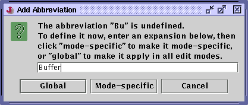

An abbreviation is a string, that when inserted, expands into some other, presumably longer and harder to type string. Abbreviations are useful for inserting long but frequently used strings. For example, you can define an abbreviation "sout" that expands to "System.out.println" in Java mode.
There are two types of abbreviations; global abbrevs and mode-specific abbrevs. Global abbrevs can be expanded in any edit mode, and mode-specific ones only affect one particular edit mode.
There are two ways to expand an abbrev. Edit>Expand Abbreviation (keyboard shortcut: Control-E Control-X) will attempt to expand the word before the caret. If no expansion could be found, it will offer to define one.
Figure 5-7. The Add Abbreviation dialog box

Also, if automatic abbreviation expansion is enabled, entering a non-alphanumeric character will automatically try to expand the word before the caret. This is a very powerful feature, but it takes some getting used to, hence it is disabled by default.
If automatic expansion is enabled and you want to enter a non-alphanumeric character without expanding the current word, prefix the character with Control-E Control-V. For example, to enter a space without expanding the current word, you would type Control-E Control-V Space.
Abbreviations can be edited in the Abbreviations pane of the Utilities>Global Options dialog box; see the section called The Global Options Dialog Box in Chapter 8. Abbreviations are preserved across editing sessions.
Tip: Abbreviation expansion behaves in a very quirky manner when used from a macro - don't use abbrevs when recording macros.